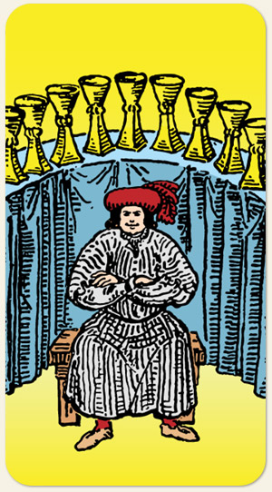

Maturidade dos sentimentos, autoestima saudável, fraternidade, alguém orgulhoso de sua história, do presente e do passado. Na imagem: um homem bem vestido com postura imponente sentado em um banco de madeira. Alguém com fortuna, sem perder a humildade. As taças enfileiradas passam a ideia de um banquete e também de uma fileira de troféus. Ao aprender a se amar, o homem aprende a amar o próximo e a deus, amor incondicional.
Positivo: Acreditar nos próprios sentimentos, na própria capacidade, mostrar seus êxitos, suas conquistas, contar sua história de superação, confiar nos ancestrais, amor familiar, dividir o pão, dividir os créditos, entender que quanto mais se doa o amor mais se recebe.
Negativo: Mesquinhez, querer tudo para si, querer receber todos os créditos, toda a atenção, ingratidão, renegar a própria história, renegar os seus, esquecer suas origens, arrogância, telhado de vidro, é querer ser amado sem nunca ter amado ninguém, não atingir maturidade emocional, falta de generosidade, sempre esperar algo em troca, exibicionismo por atos de caridade.
Símbolos: A parábola do rei que preparou um banquete para seu povo.
Cores: Cor, Cor, Cor.